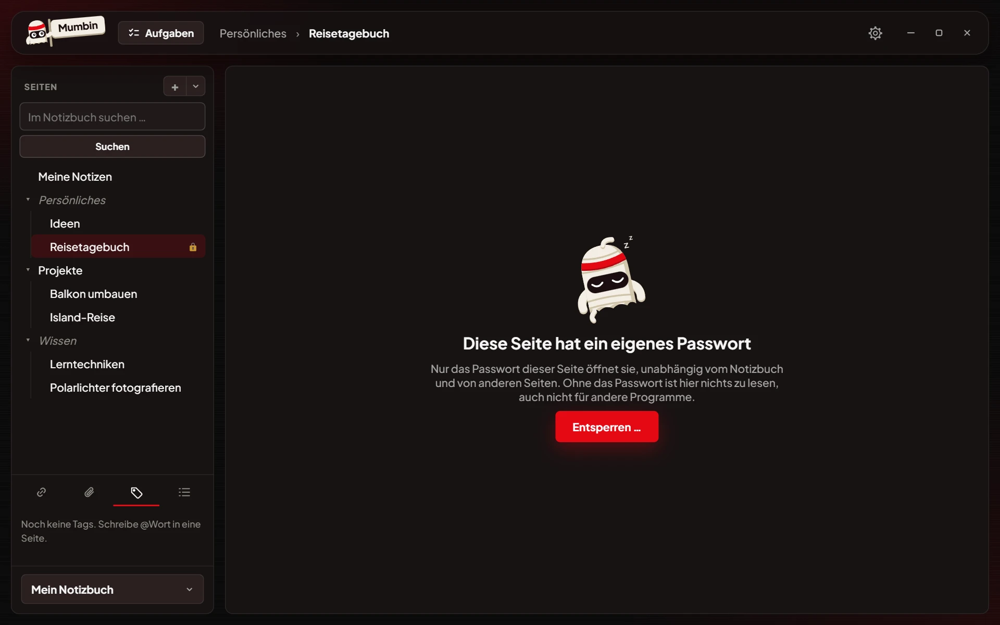

Ein Passwort für viele Seiten
Der Tresor des Notizbuchs schützt ausgewählte Seiten und ihre Anhänge mit einer Passphrase. Alle anderen Seiten bleiben offen.
Dein persönliches Notizbuch für Wissen, Projekte und private Gedanken. Verbinde Notizen, behalte Aufgaben im Blick und verschlüssele, was nur dir gehört.

Schreiben, wiederfinden, weitermachen. Alles bleibt beim passenden Thema.
Halte Ideen fest und ergänze Bilder, Tabellen oder Dateien. Die Formatierung siehst du direkt beim Schreiben.

Verbinde verwandte Seiten. Seitenbaum, Rückverweise, Tags und Suche helfen dir, später genau dort weiterzumachen.

Aufgaben stehen direkt in deinen Notizen. Die Übersicht sammelt sie mit optionalem Beginn und Frist und führt zurück zum ursprünglichen Text.

Eine private Seite oder ein ganzes Notizbuch: Du wählst, was ein Passwort braucht. Auch die zugehörigen Anhänge werden geschützt.
Der Tresor des Notizbuchs schützt ausgewählte Seiten und ihre Anhänge mit einer Passphrase. Alle anderen Seiten bleiben offen.
Einzelne Seiten bekommen unabhängig vom Tresor ein eigenes Passwort. Jede Seite kann ein anderes haben – samt ihren Anhängen.
Alles ist verschlüsselt, auch die Namen der Seiten und Anhänge auf der Festplatte. Das Passwort wird beim Öffnen abgefragt.

Deine Dateien liegen in einem Ordner deiner Wahl. Ein unabhängiges Werkzeug kann geschützte Inhalte mit deinem Passwort auch ohne Mumbin öffnen. Technische Produktdaten →
Eine portable EXE. Herunterladen, in einen Ordner legen, starten – ohne Installation.
Prüfsumme der Datei vergleichen:
Entschlüsselungs-Werkzeug (Python) herunterladen ↓ · Anleitung dazu
Nein. Mumbin ist eine portable EXE: in einen beschreibbaren Ordner legen und starten. Einstellungen werden daneben in mumbin_data gespeichert. Benötigt wird die Microsoft Edge WebView2 Runtime, die auf vielen Windows-PCs bereits vorhanden ist.
Nein. Die App speichert Notizen lokal und hat keine Cloud-Anbindung und keine Telemetrie. Links, die du bewusst anklickst, öffnen deinen Browser oder das zuständige Programm. Diese Website wird unabhängig davon von GitHub Pages ausgeliefert.
Mumbin nutzt Argon2id zum Ableiten des Schlüssels aus deinem Passwort und XChaCha20-Poly1305 zum Verschlüsseln; verändert jemand eine Datei, fällt das beim Entschlüsseln auf. Das Format ist offen: Du kannst es im Quellcode und im Python-Werkzeug nachlesen.
Nur dir. Es gibt keine Hintertür – deshalb kann außer dir niemand deine geschützten Seiten öffnen, auch nicht das unabhängige Werkzeug ohne dein Passwort. Bewahre es sicher auf und sichere deinen Notizbuchordner.
Ungeschützte Seiten sind einfache Textdateien. Geschützte Seiten öffnest du mit dem mitgelieferten Python-Werkzeug und deinem Passwort – ohne Mumbin.
Gemessen an einem Beispiel-Notizbuch mit 2.000 Seiten und 13,7 MB Text.
Messwerte der Version 0.1.0 (Release-Build) auf dem Entwicklungsrechner, ermittelt mit dem Messskript tests/perf/perf.mjs aus dem Quellcode. Auf anderen Rechnern fallen sie anders aus. Das Programm selbst belegt etwa 70 MB Arbeitsspeicher, die WebView2-Laufzeit kommt hinzu (im Test insgesamt rund 540 MB).
Anleitungen und Beispiele, wenn du mehr wissen möchtest.